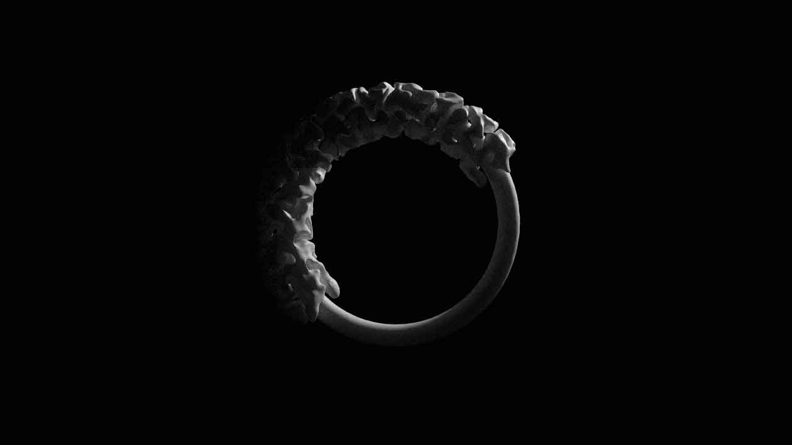
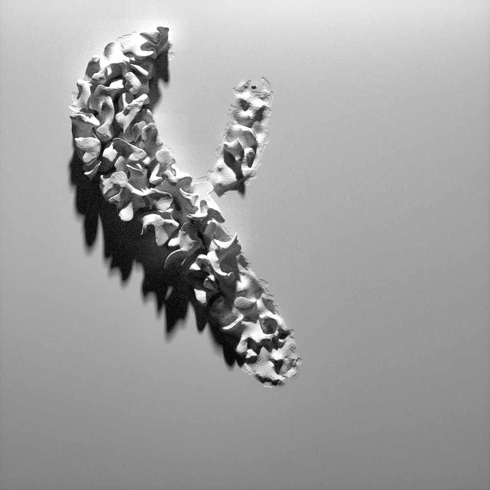
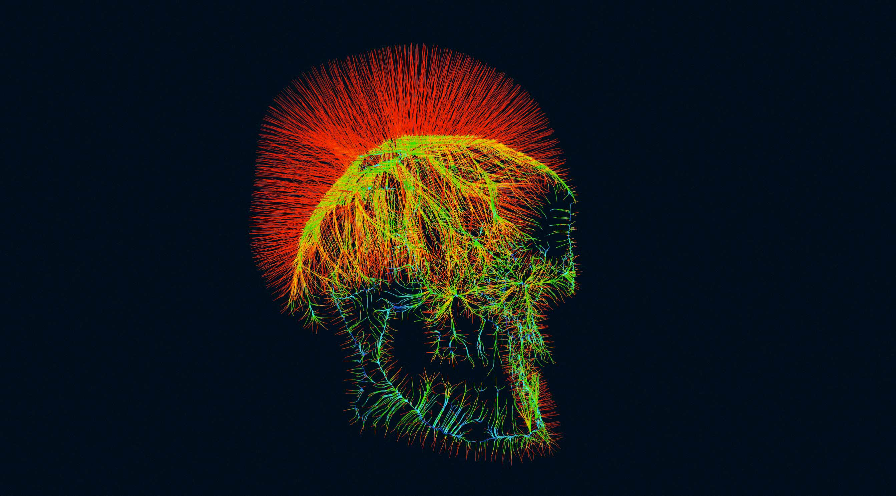
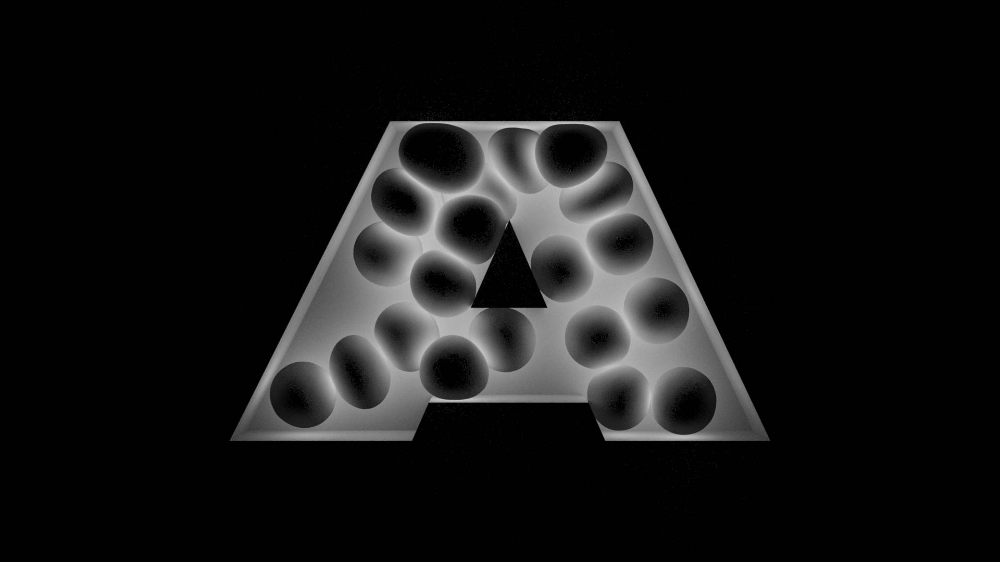
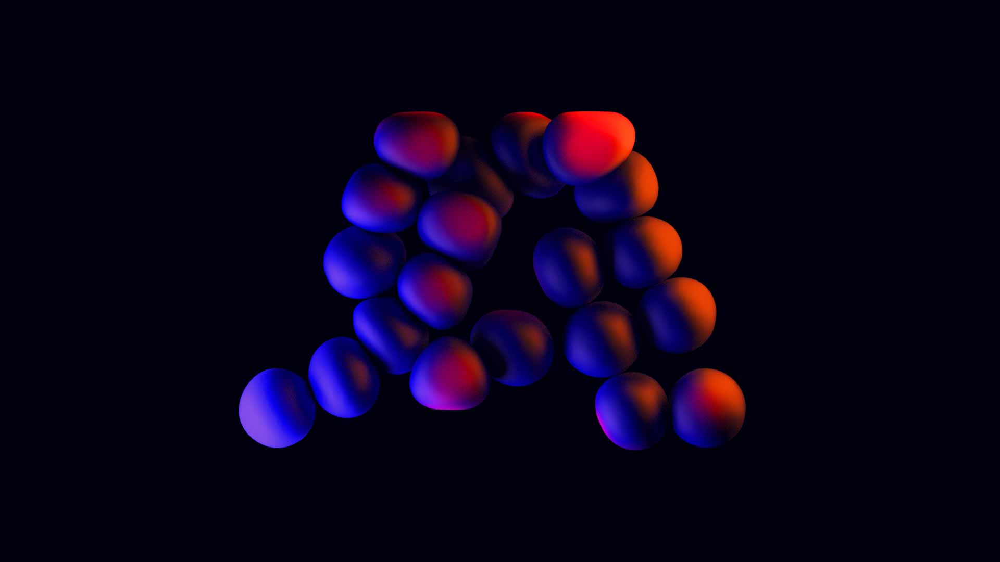
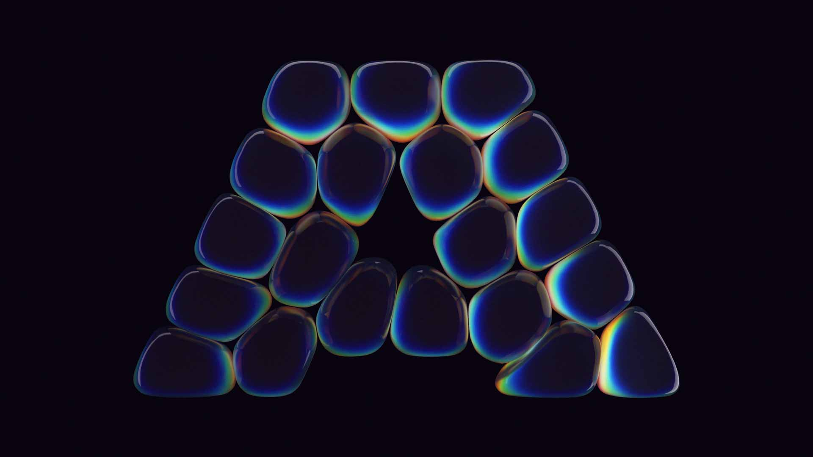

Houdini is a fully procedural graphics development environment. It is the bread and butter of the Visual Effects (VFX) community, but I think it has immense potential for future designers as we move towards a more complex and entangled future. For this project, I worked in two-week cycles. At the start of each bi-weekly cycle, I picked a specific topic in Houdini as well as a random word. The words were used to structure my learning as I attempted to visually represent them using Houdini as my weapon of choice.
Note: A big thank you to Adam Smith for the feedback and advice :)
The first area I explored in Houdini was POPs (Particle operators). The POP network is housed within the Dynamics context of Houdini and it’s mainly used for particle simulations. The main technique I used to sculpt the particle’s motion was derived from Simon Fiedler’s video about volume trails. The idea is to calculate a vector between a particle’s current location and its desired position and then use that information to adjust the particle’s velocity. Curl noise can then be added to create variance in the particle’s movement. All of this can be done using VEX (or VOPs) then stored with a volume and brought into POPs. The coloring is driven by the age, speed, and position of the particles (shout to Steven Knipping and his Applied Houdini tutorials).
Music credit: J. Cole - MIDDLE CHILD
Guessing from my limited experience with graphics programming, the next important thing to understand about Houdini was the the solver. It is essentially just a for-loop but it is found at the heart of many nodes. I am still a bit iffy on implementing complex behaviors via solvers but in general, the concept was easy to grasp. The main technique used in this piece came from an Entagma tutorial about differential growth. The mesh is being displaced along the point normals and then allowed to relax. As the solver chugs along, the mesh unfurls into a beautiful but tangled structure.
Music credit: Lukas Boysen - Gewalt


Smoke and pyroclastic simulations have been a personal favorite of mine. In this piece, I wanted to explore how form can arise from formlessness. I spent a lot of time breaking down the Smoke Solver in order to better understand the Pyro Solver (I think I understand the Gas Project Non-Divergent Multigrid microsolver). The setup was simple, import a low-density collision volume and then use a vector field to direct the smoke towards the desired areas of the object. A good chunk of time was spent understanding how to optimize Mantra.
Music credit: Simon Chioni - Fall-Winter 2016

The final thing I played around with for this project was the new Vellum Solver in H17. I wanted to take the popular soft-body ballon effect popularized by ManvsMachine and explore the negative space created by the collisions. To access collision data in the Vellum Solver requires 1) a DOP implementation and 2) an editable Vellum Solver node. After some help from Andrea on OD Force, I was able to figure out how to turn on collision tracking within the solver which let me use that data to drive the material. From there, it was a matter of tweaking the stiffness/thickness of the cloth as well as the number of substeps in the Vellum Solver to allow for a clean simulation.
Music credit: Billie Eilish - bad guy



Last Edited: Mon. July 15, 2019